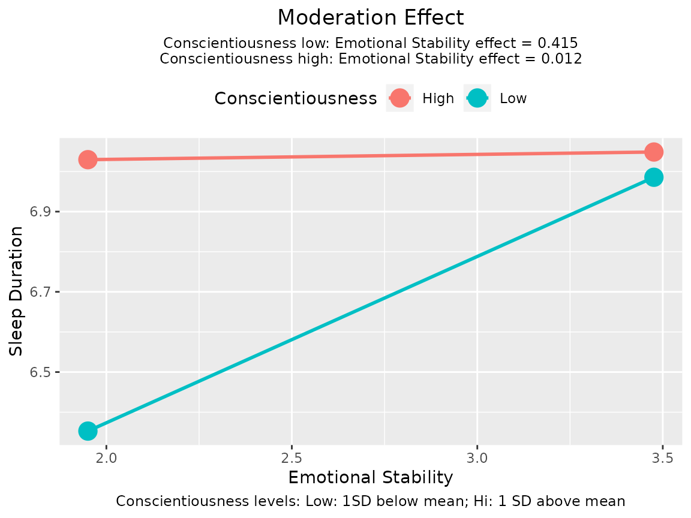
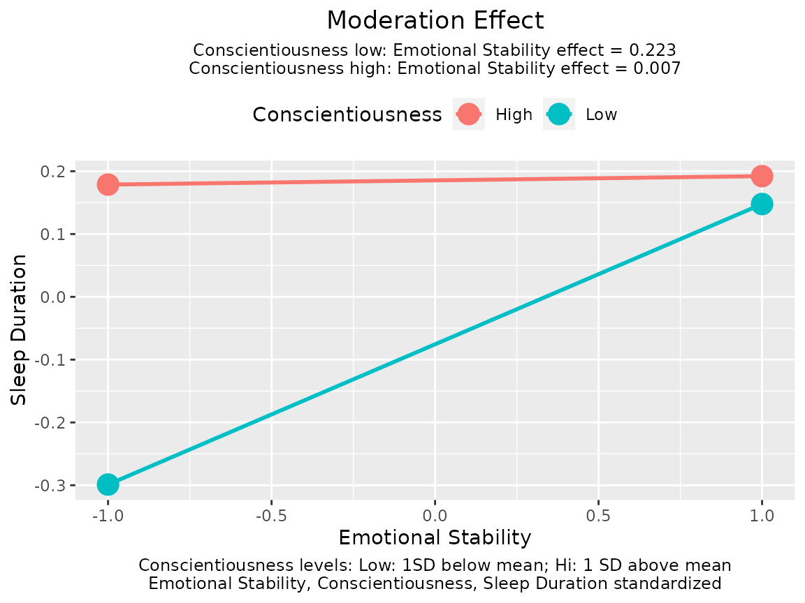

Mean Center and Standardize Selected Variable by std_selected()
Shu Fai Cheung and David Weng Ngai Vong
2023-03-13
Source:vignettes/std_selected.Rmd
std_selected.RmdPurpose
Instead of standardizing all variables, even variables that (a) are
categorical and should not be standardized, or (b) measured on
meaningful unites and do not need to be standardized,
std_selected() allows users to have more control on how
standardization is to be conducted.
A moderated regression model is used as an example but it can also be used for regression models without interaction terms.
Load the Dataset
data(sleep_emo_con)
head(sleep_emo_con, 3)
#> case_id sleep_duration conscientiousness emotional_stability age gender
#> 1 1 6 3.6 3.6 20 female
#> 2 2 4 3.8 2.4 20 female
#> 3 3 7 4.3 2.7 20 femaleThis data set has 500 cases of data. The variables are sleep duration, age, gender, and the scores from two personality scales, emotional stability and conscientiousness of the IPIP Big Five markers. Please refer to (citation to be included) for the detail of the data set.
The names of some variables are shortened for readability:
Moderated Regression
Suppose we are interested in predicting sleep duration by emotional stability, after controlling for gender and age. However, we suspect that the effect of emotional stability, if any, may be moderated by conscientiousness. Therefore, we conduct a moderated regression as follow:
lm_raw <- lm(sleep_duration ~ age + gender + emot * cons,
data = sleep_emo_con)
summary(lm_raw)
#>
#> Call:
#> lm(formula = sleep_duration ~ age + gender + emot * cons, data = sleep_emo_con)
#>
#> Residuals:
#> Min 1Q Median 3Q Max
#> -6.0841 -0.7882 0.0089 0.9440 6.1189
#>
#> Coefficients:
#> Estimate Std. Error t value Pr(>|t|)
#> (Intercept) 1.85154 1.35224 1.369 0.17155
#> age 0.01789 0.02133 0.838 0.40221
#> gendermale -0.26127 0.16579 -1.576 0.11570
#> emot 1.32151 0.45039 2.934 0.00350 **
#> cons 1.20385 0.37062 3.248 0.00124 **
#> emot:cons -0.33140 0.13273 -2.497 0.01286 *
#> ---
#> Signif. codes: 0 '***' 0.001 '**' 0.01 '*' 0.05 '.' 0.1 ' ' 1
#>
#> Residual standard error: 1.384 on 494 degrees of freedom
#> Multiple R-squared: 0.0548, Adjusted R-squared: 0.04523
#> F-statistic: 5.728 on 5 and 494 DF, p-value: 3.768e-05The results show that conscientiousness significantly moderates the effect of emotional stability on sleep duration.
This package has a simple function, plotmod(), for
generating a typical plot of the moderation effect:
plotmod(lm_raw,
x = "emot",
w = "cons",
x_label = "Emotional Stability",
w_label = "Conscientiousness",
y_label = "Sleep Duration")
The function plotmod() also prints the conditional
effects of the predictor, emotional stability in this example.
Mean Center the Moderator
To know the effect of emotional stability when conscientiousness is
equal to its mean, we can center conscientiousness by its mean in the
data and redo the moderated regression. Instead of creating the new
variable and rerun the regression, we can pass the lm()
output to std_selected() and specify the variables to be
mean centered:
lm_w_centered <- std_selected(lm_raw,
to_center = ~ cons)
printCoefmat(summary(lm_w_centered)$coefficients, digits = 3)
#> Estimate Std. Error t value Pr(>|t|)
#> (Intercept) 5.8763 0.5170 11.37 <2e-16 ***
#> age 0.0179 0.0213 0.84 0.4022
#> gendermale -0.2613 0.1658 -1.58 0.1157
#> emot 0.2136 0.0834 2.56 0.0108 *
#> cons 1.2039 0.3706 3.25 0.0012 **
#> emot:cons -0.3314 0.1327 -2.50 0.0129 *
#> ---
#> Signif. codes: 0 '***' 0.001 '**' 0.01 '*' 0.05 '.' 0.1 ' ' 1The argument for meaning centering is to_center. The
variable is specified in the formula form, placing them on the right
hand side of the formula.
In this example, when conscientiousness is at mean level, the effect of emotional stability is 0.2136.
Mean Center The Moderator and the Focal Variable
This example demonstrates centering more than one variable. In the
following model, both emotional stability and conscientiousness are
centered. They are placed after ~ and joined by
+.
lm_xw_centered <- std_selected(lm_raw,
to_center = ~ emot + cons)
printCoefmat(summary(lm_xw_centered)$coefficients, digits = 3)
#> Estimate Std. Error t value Pr(>|t|)
#> (Intercept) 6.4557 0.4783 13.50 <2e-16 ***
#> age 0.0179 0.0213 0.84 0.402
#> gendermale -0.2613 0.1658 -1.58 0.116
#> emot 0.2136 0.0834 2.56 0.011 *
#> cons 0.3047 0.1055 2.89 0.004 **
#> emot:cons -0.3314 0.1327 -2.50 0.013 *
#> ---
#> Signif. codes: 0 '***' 0.001 '**' 0.01 '*' 0.05 '.' 0.1 ' ' 1Standardize The Moderator and The Focal Variable
To standardize a variable we first mean center it and then scale it
by its standard deviation. Scaling is done by listing the variable on
to_scale. The input format is identical to that of
to_center.
lm_xw_std <- std_selected(lm_raw,
to_center = ~ emot + cons,
to_scale = ~ emot + cons)
printCoefmat(summary(lm_xw_std)$coefficients, digits = 3)
#> Estimate Std. Error t value Pr(>|t|)
#> (Intercept) 6.4557 0.4783 13.50 <2e-16 ***
#> age 0.0179 0.0213 0.84 0.402
#> gendermale -0.2613 0.1658 -1.58 0.116
#> emot 0.1630 0.0637 2.56 0.011 *
#> cons 0.1849 0.0640 2.89 0.004 **
#> emot:cons -0.1534 0.0615 -2.50 0.013 *
#> ---
#> Signif. codes: 0 '***' 0.001 '**' 0.01 '*' 0.05 '.' 0.1 ' ' 1In this example, when conscientiousness is at mean level, for each one standard deviation increase of emotional stability, the predicted sleep duration increases by 0.1630 hour.
plotmod(lm_xw_std,
x = "emot",
w = "cons",
x_label = "Emotional Stability",
w_label = "Conscientiousness",
y_label = "Sleep Duration")
The function plotmod() automatically checks whether a
variable is standardized. If yes, it will report this in the plot as
table note on the bottom.
The pattern of the plot does not change. However, the conditional effects reported in the graph are now based on the model with emotional stability and conscientiousness standardized.
Standardize The Moderator, The Focal Variable, and the Outcome Variable
We can also mean center or standardize the outcome variable
(dependent variable). We just add the variable to the right hand side of
~ in to_center and to_scale as
appropriate.
lm_xwy_std <- std_selected(lm_raw,
to_center = ~ emot + cons + sleep_duration,
to_scale = ~ emot + cons + sleep_duration)
printCoefmat(summary(lm_xwy_std)$coefficients, digits = 3)
#> Estimate Std. Error t value Pr(>|t|)
#> (Intercept) -0.2263 0.3376 -0.67 0.503
#> age 0.0126 0.0151 0.84 0.402
#> gendermale -0.1844 0.1170 -1.58 0.116
#> emot 0.1150 0.0449 2.56 0.011 *
#> cons 0.1305 0.0452 2.89 0.004 **
#> emot:cons -0.1083 0.0434 -2.50 0.013 *
#> ---
#> Signif. codes: 0 '***' 0.001 '**' 0.01 '*' 0.05 '.' 0.1 ' ' 1In this example, when conscientiousness is at mean level, the standardized moderation effect of emotional stability on sleep duration is 0.1150.
plotmod(lm_xwy_std,
x = "emot",
w = "cons",
x_label = "Emotional Stability",
w_label = "Conscientiousness",
y_label = "Sleep Duration")Again, the pattern of the plot does not change, but the conditional effects reported in the graph are now based on the model with emotional stability, conscientiousness, and sleep duration standardized.
Standardize All Variables
If we want to standardize all variables except for categorical
variables, if any, we can use ~ . as a shortcut.
std_selected() will automatically skip categorical
variables (i.e., factors or string variables in the regression model of
lm()).
lm_all_std <- std_selected(lm_raw,
to_center = ~ .,
to_scale = ~ .)
printCoefmat(summary(lm_all_std)$coefficients, digits = 3)
#> Estimate Std. Error t value Pr(>|t|)
#> (Intercept) 0.0549 0.0488 1.12 0.261
#> age 0.0371 0.0443 0.84 0.402
#> gendermale -0.1844 0.1170 -1.58 0.116
#> emot 0.1150 0.0449 2.56 0.011 *
#> cons 0.1305 0.0452 2.89 0.004 **
#> emot:cons -0.1083 0.0434 -2.50 0.013 *
#> ---
#> Signif. codes: 0 '***' 0.001 '**' 0.01 '*' 0.05 '.' 0.1 ' ' 1The Usual Standardized Solution
For comparison, this is the results of standardizing all variables, including the product term and the categorical variable.
library(lm.beta) # For generating the typical standardized solution
lm_usual_std <- lm.beta(lm_raw)
printCoefmat(summary(lm_usual_std)$coefficients, digits = 3)
#> Estimate Standardized Std. Error t value Pr(>|t|)
#> (Intercept) 1.8515 NA 1.3522 1.37 0.1715
#> age 0.0179 0.0371 0.0213 0.84 0.4022
#> gendermale -0.2613 -0.0693 0.1658 -1.58 0.1157
#> emot 1.3215 0.7116 0.4504 2.93 0.0035 **
#> cons 1.2039 0.5156 0.3706 3.25 0.0012 **
#> emot:cons -0.3314 -0.7820 0.1327 -2.50 0.0129 *
#> ---
#> Signif. codes: 0 '***' 0.001 '**' 0.01 '*' 0.05 '.' 0.1 ' ' 1In moderated regression, the coefficient of standardized product term, -0.7820, is not interpretable. The coefficient of standardized gender, -0.0693, is also difficult to interpret.
Improved Confidence Interval For “Betas”
It has been shown (e.g., Yuan & Chan, 2011) that the standard
errors of standardized regression coefficients (betas) computed just by
standardizing the variables are biased, and consequently the confidence
intervals are also invalid. The function
std_selected_boot() is a wrapper of
std_selected() that also forms the confidence interval of
the regression coefficients when standardization is conducted, using
nonparametric bootstrapping as suggested by Cheung, Cheung, Lau, Hui,
and Vong (2022).
We use the same example above that standardizes emotional stability,
conscientiousness, and sleep duration, to illustrate this function. The
argument nboot specifies the number of nonparametric
bootstrap samples. The level of confidence set by conf. The
default is .95, denoting 95% confidence intervals. If this is the
desired level, this argument can be omitted.
set.seed(58702)
lm_xwy_std_ci <- std_selected_boot(lm_raw,
to_center = ~ emot + cons + sleep_duration,
to_scale = ~ emot + cons + sleep_duration,
nboot = 2000)
summary(lm_xwy_std_ci)
#>
#> Call to std_selected_boot():
#> std_selected_boot(lm_out = lm_raw, to_center = ~emot + cons +
#> sleep_duration, to_scale = ~emot + cons + sleep_duration,
#> nboot = 2000)
#>
#> Selected variable(s) are centered by mean and/or scaled by SD
#> - Variable(s) centered: emot cons sleep_duration
#> - Variable(s) scaled: emot cons sleep_duration
#>
#> centered_by scaled_by Note
#> sleep_duration 6.776333 1.4168291 Standardized (mean = 0, SD = 1)
#> age 0.000000 1.0000000
#> gender NA NA Nonnumeric
#> emot 2.713200 0.7629613 Standardized (mean = 0, SD = 1)
#> cons 3.343200 0.6068198 Standardized (mean = 0, SD = 1)
#>
#> Note:
#> - Categorical variables will not be centered or scaled even if
#> requested.
#> - Nonparametric bootstrapping 95% confidence intervals computed.
#> - The number of bootstrap samples is 2000.
#>
#> Call:
#> lm(formula = sleep_duration ~ age + gender + emot * cons, data = dat_mod)
#>
#> Residuals:
#> Min 1Q Median 3Q Max
#> -4.2941 -0.5563 0.0063 0.6663 4.3187
#>
#> Coefficients:
#> Estimate CI Lower CI Upper Std. Error t value Pr(>|t|)
#> (Intercept) -0.226270 -0.831491 0.350298 0.337569 -0.670 0.50298
#> age 0.012624 -0.012787 0.039725 0.015057 0.838 0.40221
#> gendermale -0.184402 -0.448399 0.072333 0.117016 -1.576 0.11570
#> emot 0.115014 0.025582 0.200143 0.044927 2.560 0.01076 *
#> cons 0.130502 0.028861 0.232320 0.045167 2.889 0.00403 **
#> emot:cons -0.108292 -0.200473 -0.007734 0.043374 -2.497 0.01286 *
#> ---
#> Signif. codes: 0 '***' 0.001 '**' 0.01 '*' 0.05 '.' 0.1 ' ' 1
#>
#> Residual standard error: 0.9771 on 494 degrees of freedom
#> Multiple R-squared: 0.0548, Adjusted R-squared: 0.04523
#> F-statistic: 5.728 on 5 and 494 DF, p-value: 3.768e-05
#>
#> Note:
#> - Estimates and their statistics are based on the data after
#> mean-centering, scaling, or standardization.
#> - [CI Lower, CI Upper] are bootstrap percentile confidence intervals.
#> - Std. Error are not bootstrap SEs.The standardized moderation effect is -0.1083 , and the 95% nonparametric bootstrap percentile confidence interval is -0.2005 to -0.0077.
Note: As a side product, the nonparametric bootstrap confidence of the other coefficients are also reported. They can be used for other variables that are standardized in the same model, whether they are involved in the moderation or not.
Further Information
Further information on the functions can be found in their help pages
(std_selected() and std_selected_boot()). For
example, parallel computation can be used when doing bootstrapping, if
the number of bootstrapping samples request is large.
Reference
Cheung, S. F., Cheung, S.-H., Lau, E. Y. Y., Hui, C. H., & Vong, W. N. (2022) Improving an old way to measure moderation effect in standardized units. Health Psychology, 41(7), 502-505. https://doi.org/10.1037/hea0001188.
Yuan, K.-H., & Chan, W. (2011). Biases and standard errors of standardized regression coefficients. Psychometrika, 76(4), 670-690. https://doi.org/10.1007/s11336-011-9224-6